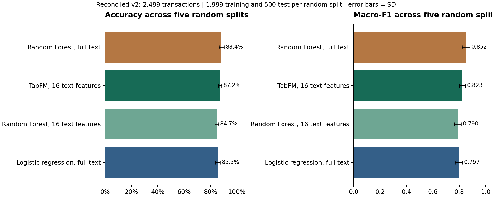
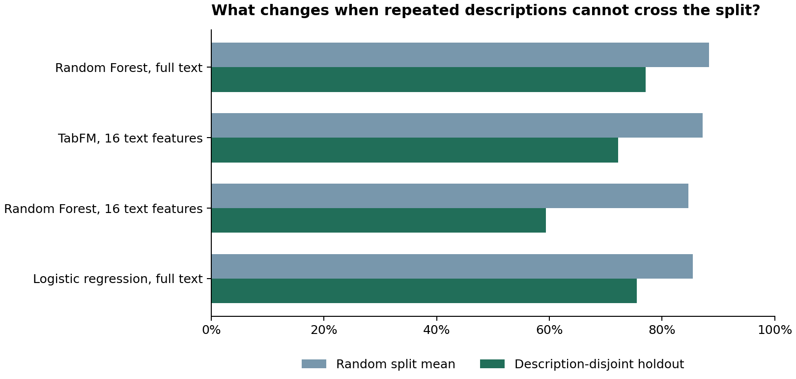
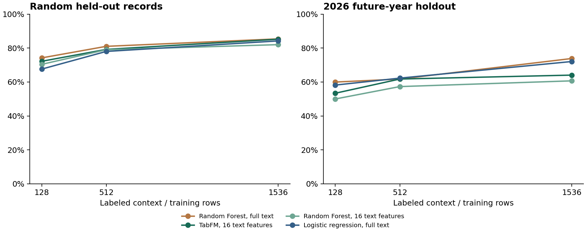

Reconciled dataset v2 | Exploratory personal-ledger case study | October 25, 2026
Situation
Reading about Google's TimesFM led to TabFM, a foundation model for tabular classification and regression. TabFM is pretrained on synthetic tables generated from structural causal models. At inference, labeled rows supply context for predicting unlabeled rows while the pretrained weights remain fixed. The paper reports evaluations across 51 classification and regression datasets [1]. This project applies the released PyTorch implementation to a different setting: four years of a manually categorized college spending tracker.
The financial records already contain human editing. Their labels describe a personal taxonomy, including categories whose boundaries depend on purchase intent. An earlier experiment used a selected table of 2,446 transactions. Its source audit showed that the 2025 Miscellaneous sheet had additional records, and that several category views contained edited descriptions or amount allocations. Those earlier scores are retained as version-1 exploratory results.
Task
Evaluate whether a frozen tabular foundation model can reproduce the nine expense categories, and establish how the result changes with text representation, training size, repeated descriptions, and evaluation design. Practical use also requires measuring how many predictions could be accepted at a validation-selected confidence threshold, with the remainder sent for manual review.
The study therefore reconciles the source views, repeats fixed random splits, holds out description groups, controls context size in random and chronological tests, compares paired descriptions, and evaluates an abstention workflow. It compares fixed pipelines rather than attempting to reproduce Google's benchmark or find an optimized model.
Analysis
Dataset reconciliation
The frozen v2 table has 2,499 records: 565 from 2023, 721 from 2024, 651 from 2025, and 562 from 2026. The 53 added records are explicitly categorized Miscellaneous transactions from the 2025 category sheet with no date/amount matches in the monthly table. The 2,446 primary records retain their original labels, amounts, and descriptions.
Category views are matched one-to-one using timing, amount in integer cents, category, and description where needed. Edited-description pairs require a unique date/amount/category match in both views. Repeated primary purchases are preserved. Excess or ambiguous view rows are quarantined rather than added as purchases. The reconciliation records 2,430 links, 244 uniquely linked description edits, and 28 quarantined rows. It separately excludes 109 selected income rows, seven primary dates whose year conflicts with their workbook, and one unknown label. Seven invalid secondary dates also remain quarantined.
The quarantine includes three unmatched amounts on dates and categories already represented in the primary table; these could be edited allocations. No dates are guessed or category conflicts silently resolved. This is a reconciled selection with unresolved records documented, not a claim that every expenditure in every workbook has been recovered. Exact transaction dates are unavailable for 2023, which records academic terms.
Features and fixed pipelines
The numeric inputs are signed log-transformed amount and month. Missing values and scaling are fitted on training/context rows only. Classification codes, category totals, source sheets, subcategories, and row identifiers never become predictors.
Text features use normalized character sequences of length 3 to 5 within word boundaries. TF-IDF weights those sequences using the training descriptions. Truncated SVD compresses the representation to 16 components for TabFM. For example, SPOTIFY and SPOTIFY USA share sequences such as spo, spot, and spoti. The 16 resulting numbers summarize recurring character patterns, so alternate strings can share features without relying on pretrained language semantics. TF-IDF vocabulary, IDF weights, and SVD components are fitted separately for each training set. Test rows are transformed with those fitted objects [2].
Random Forest and logistic regression use the full character representation plus the numeric inputs. A second Random Forest receives exactly the compressed numeric representation supplied to TabFM. This matched-feature comparator separates representation effects from a broad model-name comparison. Forests use 400 trees, square-root feature sampling, balanced-subsample class weights, and seed 42. Logistic regression uses C=1. No model-parameter or SVD-dimension search is performed.
The official TabFM checkpoint is frozen, evaluated in float32 on four CPU threads with one ensemble member and no feature permutation or class shift. This differs from the library's default 32-member ensemble. The executed checkpoint contains 1,639,444,298 parameters, whereas the paper abstract describes a 400M model. Exact source and checkpoint revisions are pinned, so the study identifies the released configuration being evaluated rather than assuming architectural identity with the paper.
The base classifier's categorical encoding does not supply an LLM's understanding of transaction descriptions or column names. The fixed character features provide lexical structure. TabFM-Auto explores LLM-guided feature engineering around frozen TabFM [1]. This experiment directly evaluates TabFM with deterministic preprocessing. It does not implement the video's agent or database workflow.
Evaluation plan
Five category-stratified random 80/20 splits use seeds 42, 11, 23, 67, and 89. Each has 1,999 training rows and 500 held-out rows, with all years pooled. Means, sample standard deviations, and ranges describe variation across those splits. The repetitions overlap and are not independent external replications.
The description-disjoint test uses the first prespecified fold of a shuffled five-fold StratifiedGroupKFold with seed 42. Its groups are exact normalized descriptions. It has 1,985 training and 514 test records, with no description group crossing the split. Alternate strings from the same merchant may still occur in different groups; this is not a verified merchant-disjoint evaluation [3].
Context-size tests use 128, 512, and 1,536 labeled examples. The random tests preserve the seed-42 test set. The chronological tests use 2023-2025 as the context pool and reserve 2026. Each pipeline receives the same selected rows within a case. Sampling is category-stratified and fixed by seed 42. These controls distinguish a larger training budget from a change in split design, although the random and future-year test populations naturally differ.
The paired-description test uses 46 held-out seed-42 records with unique edited-view links. Models are fitted on the as-supplied training descriptions and evaluated on both versions of the same held-out records. This measures sensitivity to recorded human edits. Neither view is verified as an untouched bank export, and the edits may already reflect knowledge of the category.
For confidence gating, the seed-42 training set is split into 1,599 fitting rows and 400 validation rows. The 500 outer test rows remain separate. For targets of 90% and 95% observed validation accuracy, the gate chooses maximum coverage over a fixed score-threshold grid, requiring at least 30 accepted validation records. It then reports actual test accuracy, coverage, manual-review count, and Wilson intervals. Native model scores are not assumed to be calibrated probabilities [4].
Result
Repeated random splits
| Pipeline | Mean accuracy +/- SD | Accuracy range | Mean macro-F1 |
|---|---|---|---|
| Random Forest, full text | 88.4% +/- 2.0 pp | 86.4% to 90.6% | 0.852 |
| TabFM, 16 text features | 87.2% +/- 1.3 pp | 86.0% to 89.2% | 0.823 |
| Random Forest, 16 text features | 84.7% +/- 1.4 pp | 83.6% to 86.8% | 0.790 |
| Logistic regression, full text | 85.5% +/- 1.9 pp | 83.0% to 87.4% | 0.797 |
TabFM averaged 87.2%, compared with 88.4% for the full-text forest. The difference is 1.12 percentage points in favor of the forest. TabFM exceeded the matched-feature forest's mean by 2.56 points. These are descriptive pipeline comparisons. Overlapping splits and one dataset do not establish general superiority.

Description-disjoint evaluation
| Pipeline | Random accuracy mean | Description-disjoint accuracy | Description-disjoint macro-F1 |
|---|---|---|---|
| Random Forest, full text | 88.4% | 77.0% | 0.641 |
| TabFM, 16 text features | 87.2% | 72.2% | 0.551 |
| Random Forest, 16 text features | 84.7% | 59.3% | 0.479 |
| Logistic regression, full text | 85.5% | 75.5% | 0.617 |
TabFM's accuracy was 72.2% and its macro-F1 was 0.551. The full-text forest scored 77.0% accuracy and 0.641 macro-F1. The drop from the random-split means is 15.1 points for TabFM and 11.3 for the forest. The grouped split also changes the holdout population, so this contrast does not isolate a causal effect of memorization.

The grouped test is a harder question than randomly filling gaps among familiar descriptions. Its result should be reported alongside the random-split result. It does not establish transfer to verified unseen merchants or to another person's finances.
Matched context sizes
| Context rows | Random TabFM | Random forest, same 16 features | Future-year TabFM | Future-year forest, same 16 features |
|---|---|---|---|---|
| 128 | 72.2% | 70.4% | 53.4% | 50.0% |
| 512 | 79.2% | 79.0% | 61.7% | 57.3% |
| 1536 | 85.2% | 82.0% | 64.1% | 60.7% |
From 128 to 1,536 labeled rows, TabFM changed from 72.2% to 85.2% in the random test, and from 53.4% to 64.1% on 2026. At 512 historical rows it scored 61.7%; that reconciled-v2 result has a different context pool from the earlier 59.8% v1 result.
At 1,536 historical examples, the full-text forest scored 73.8% on 2026, compared with 64.1% for TabFM. This prospective-style split shows a larger pipeline gap than the pooled random comparison, although the 2026 labels had already been examined during earlier exploratory work.

All four pipelines and per-category results for every context size are retained in the machine-readable outputs. Context-size effects should be interpreted with the fixed sampling procedure and test population in mind. These are three budgets on one random test set and one future-year test set, rather than a fitted universal scaling law.
Paired description edits
| Pipeline | Monthly-view description | Edited category-view description | Change |
|---|---|---|---|
| Random Forest, full text | 87.0% | 93.5% | +6.5 pp |
| TabFM, 16 text features | 84.8% | 95.7% | +10.9 pp |
| Random Forest, 16 text features | 78.3% | 91.3% | +13.0 pp |
| Logistic regression, full text | 89.1% | 84.8% | -4.3 pp |
The same 46 transactions appear in both columns. The contrast concerns the stored monthly and edited views. It does not estimate an LLM cleaning effect or show that a fully autonomous system could create the edited descriptions.
Confidence and manual review
| Pipeline | Validation target | Chosen score threshold | Test coverage | Accepted accuracy (95% Wilson interval) | Manual review / 500 |
|---|---|---|---|---|---|
| Random Forest, full text | 90% | 0.39 | 96.4% | 89.0% (85.9%-91.5%) | 18 |
| Random Forest, full text | 95% | 0.60 | 83.8% | 95.2% (92.7%-96.9%) | 81 |
| TabFM, 16 text features | 90% | 0.42 | 95.2% | 88.9% (85.7%-91.4%) | 24 |
| TabFM, 16 text features | 95% | 0.74 | 82.0% | 95.1% (92.6%-96.8%) | 90 |
| Random Forest, 16 text features | 90% | 0.35 | 90.0% | 90.0% (86.9%-92.4%) | 50 |
| Random Forest, 16 text features | 95% | 0.59 | 76.6% | 95.6% (93.0%-97.2%) | 117 |
| Logistic regression, full text | 90% | 0.34 | 87.8% | 90.4% (87.3%-92.8%) | 61 |
| Logistic regression, full text | 95% | 0.56 | 70.6% | 96.3% (93.8%-97.8%) | 147 |
For TabFM's 95% validation target, the selected score threshold was 0.74. It accepted 410 of 500 test records (82.0%) with actual accepted accuracy of 95.1%, leaving 90 for review. This operating point reports what happened on the test sample. It does not certify future 95% accuracy.
Thresholds are selected using validation labels only. A validation target is an operating rule, not a guarantee of the same accuracy on the outer test. Accepted-record Wilson intervals are saved with the results. The fitting context here is 1,599 rows, so these gate accuracies should not be conflated with the primary models trained on all 1,999 rows.
Primary-split representation checks
| Pipeline on seed 42 | Accuracy | Macro-F1 |
|---|---|---|
| Random Forest, full text | 86.4% | 0.854 |
| Random Forest, 16 text features | 83.8% | 0.808 |
| Logistic regression, full text | 85.4% | 0.825 |
| TabFM, 16 text features | 86.2% | 0.837 |
| TabFM, categorical description | 78.0% | 0.678 |
| TabFM, normalized description | 77.8% | 0.702 |
| Random Forest, amount and month | 40.2% | 0.315 |
| Random Forest, text only | 86.0% | 0.838 |
| Description lookup | 78.4% | 0.754 |
| Most common category | 35.0% | 0.058 |
These include description-only and numeric-only forest ablations, a lookup baseline, and the categorical-description TabFM variants. They help identify where the signal comes from within the seed-42 case. They are not repeated across all five seeds.
The primary test has 359 records whose normalized description occurs in training and 141 with new strings. TabFM scored 96.4% and 60.3% in those respective subsets. The text-only forest scored 86.0%, compared with 40.2% for amount and month alone. This supports the importance of description information in this sample.
Category-level errors
| Category | Test support | TabFM recall | TabFM F1 | Full-text forest F1 |
|---|---|---|---|---|
| Avoidable | 20 | 65.0% | 0.788 | 0.889 |
| Eating out | 175 | 94.9% | 0.920 | 0.911 |
| Football | 17 | 64.7% | 0.710 | 0.759 |
| General | 100 | 82.0% | 0.812 | 0.808 |
| Groceries | 58 | 89.7% | 0.929 | 0.929 |
| Miscellaneous | 34 | 67.6% | 0.676 | 0.656 |
| Rent and utilities | 10 | 90.0% | 0.947 | 1.000 |
| Subscriptions | 21 | 95.2% | 0.909 | 0.870 |
| Transport | 65 | 84.6% | 0.846 | 0.864 |
Support is the number of held-out records in the primary split. Macro-F1 averages category F1 scores equally, so it exposes weak categories that total accuracy can obscure. Small categories have few test examples and correspondingly uncertain scores. These labels express the owner's classification choices, with no independent label adjudication.
Interpretation and limits
The defensible contribution is an audited case study of how a released tabular foundation model behaves on one personal expense taxonomy. Representation, repeated descriptions, context budget, and holdout design are explicit experimental factors. The comparison concerns fixed pipelines and the identified CPU configuration. It does not establish general superiority, reproduce a benchmark leaderboard, or measure untouched bank-export categorization.
For this dataset, the full-text Random Forest remains the stronger reference pipeline: its average random accuracy is higher, and it also performs better on the description-disjoint and 1,536-row future-year cases. TabFM is competitive on the random task despite using compressed features, and exceeds the forest when that forest receives the same compression. Those findings make representation design a useful next research question. They do not support replacing human review across the ledger.
The protocol was fixed before these v2 model runs, after the earlier v1 results had already been examined. The study is therefore exploratory. There is no untouched external final test. Personal labels may be inconsistent, ambiguous transactions can lack sufficient observable information, the reconciliation leaves unresolved rows quarantined, and exact merchant identities have not been verified. Human edits can contain category knowledge. The repeated splits share observations and do not justify treating five scores as five independent datasets.
Each prediction, probability, partition, source checksum, feature setting, and evaluation result is saved. A future confirmatory study should freeze a reconciled taxonomy, establish merchant identifiers where possible, and reserve newly collected transactions before additional model changes. This study's evidence supports discussion and targeted follow-up under its stated scope.
References and provenance
1. Kong et al. (2026). TabFM: A Zero-Shot Foundation Model for Tabular Data.
2. scikit-learn feature extraction and train-only preprocessing.